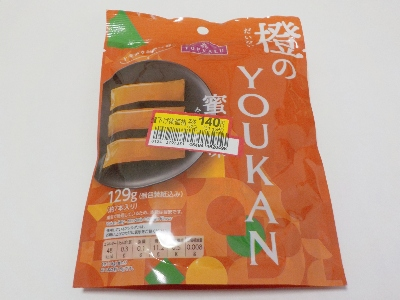

天恵製菓の橙のYOUKAN柑橘味
2025/02/22

個包装のスティックタイプで手軽に食べれる羊羹です。
あんこの味よりもみかん味が強いので、少し寒天ゼリーっぽい感じがしました。羊羹とゼリーの中間かな。
柑橘味が強いので、甘いんですけど爽やかな感じがしました。美味しかったです、
長野県下伊那郡豊丘村大字神稲6855
2025/02/22

個包装のスティックタイプで手軽に食べれる羊羹です。
あんこの味よりもみかん味が強いので、少し寒天ゼリーっぽい感じがしました。羊羹とゼリーの中間かな。
柑橘味が強いので、甘いんですけど爽やかな感じがしました。美味しかったです、